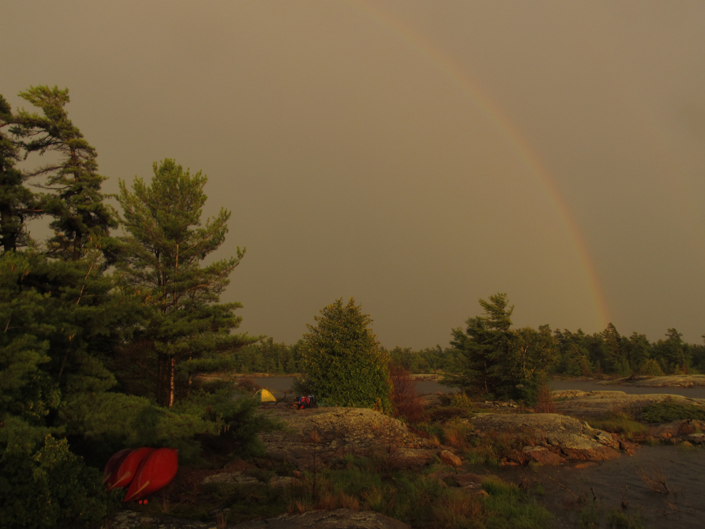

Expedition Location
We launched our canoes at Killbear Provincial Park (green marker) and spent the next 14 days weaving through the islands on the eastern coast of Georgian Bay, making our way north to a pick up point on the Key River (red marker). Over two weeks, we paddled a total of approximately 140 kilometers.
Gallery

The rainbow after the storm passed
To find out more about the Canadian Conservation Corps, click here
To find out more about Outward Bound Canada, click here
All images belong to Ryan Lamoureux